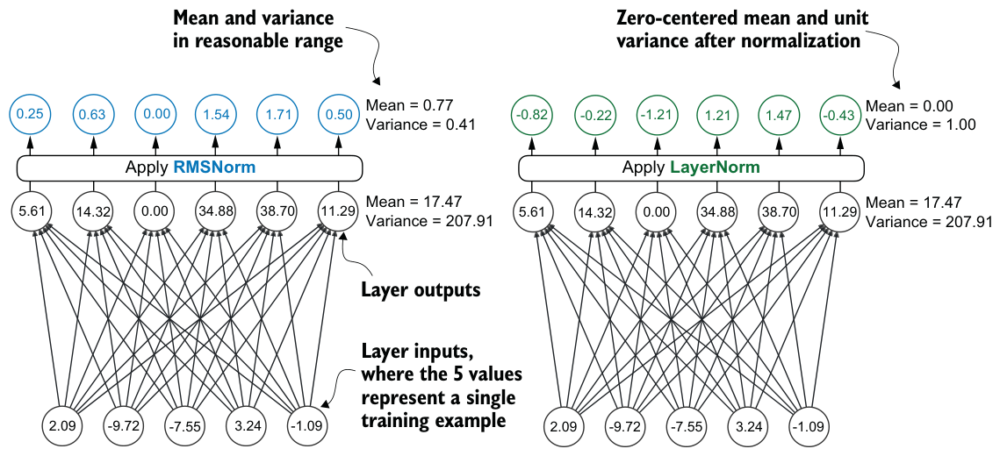
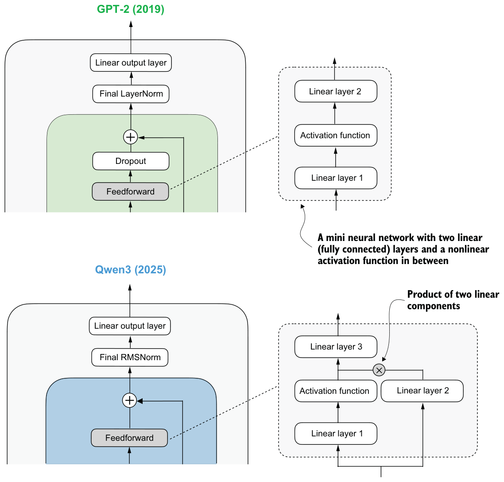
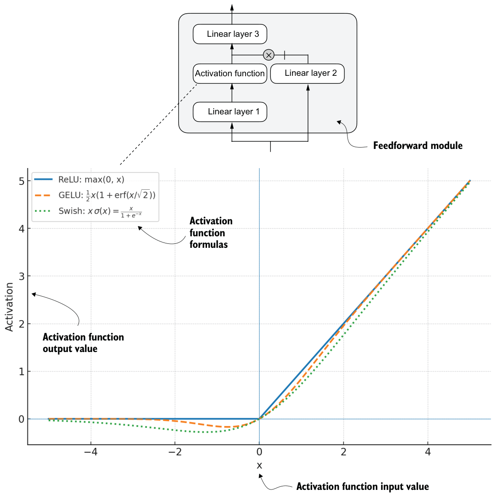

C.1RMSNorm
In contrast to GPT-2, which used standard LayerNorm, the newer Qwen3 architecture uses root mean square layer normalization (RMSNorm). This trend has become increasingly common in recent model architectures.
RMSNorm fulfills the same core function as LayerNorm: normalizing layer activations to stabilize and improve training. But it simplifies the computation by removing the mean-centering step, as shown in figure C.2. This means that activations are still normalized, but they are not centered at 0.

As you can see in figure C.2, both LayerNorm and RMSNorm scale the layer outputs to a reasonable range.
LayerNorm subtracts the mean and divides by the standard deviation so that the layer outputs have zero mean and unit variance (a variance of one and a standard deviation of one), which results in favorable gradient properties for stable training.
RMSNorm divides the inputs by the root mean square. This scales activations to a comparable magnitude without enforcing zero mean or unit variance. In the example shown in figure C.2, the mean is 0.77 and the variance is 0.41.
Both LayerNorm and RMSNorm stabilize activation scales and improve optimization, but RMSNorm is often preferred in large-scale LLMs because it is computationally cheaper. Unlike LayerNorm, RMSNorm does not use a bias (shift) term by default, which reduces the number of trainable parameters. Moreover, RMSNorm reduces the expensive mean and variance computations to a single root-mean-square operation. This reduces the number of cross-feature reductions from two to one, which lowers communication overhead on GPUs and slightly improves training efficiency.
The following listing shows what RMSNorm looks like in code.
import torch.nn as nn
class RMSNorm(nn.Module):
def __init__(
self,
emb_dim,
eps=1e-6,
bias=False,
qwen3_compatible=True,
):
super().__init__()
self.eps = eps
self.qwen3_compatible = qwen3_compatible
self.scale = nn.Parameter(torch.ones(emb_dim))
self.shift = nn.Parameter(torch.zeros(emb_dim)) if bias else None
def forward(self, x):
input_dtype = x.dtype
if self.qwen3_compatible:
x = x.to(torch.float32)
variance = x.pow(2).mean(dim=-1, keepdim=True)
norm_x = x * torch.rsqrt(variance + self.eps)
norm_x = norm_x * self.scale
if self.shift is not None:
norm_x = norm_x + self.shift
return norm_x.to(input_dtype)Note that, for brevity, this appendix does not provide detailed code walk-throughs for each LLM component. Instead, in section C.6, we’ll integrate all the components into the Qwen3Model class, load the pretrained weights into it, and then use this model to generate text in section C.9.
C.2Feedforward module
The feedforward module (a small multilayer perceptron) is replaced with a gated linear unit (GLU) variant introduced in a 2020 paper, “GLU Variants Improve Transformer” (https://arxiv.org/abs/2002.05202). In this design, the standard two fully connected layers are replaced with three, as shown in figure C.3.

Qwen3’s feedforward module, shown in figure C.3, can be implemented as shown in the next listing.
class FeedForward(nn.Module):
def __init__(self, cfg):
super().__init__()
self.fc1 = nn.Linear(
cfg["emb_dim"], cfg["hidden_dim"], dtype=cfg["dtype"],
bias=False
)
self.fc2 = nn.Linear(
cfg["emb_dim"], cfg["hidden_dim"], dtype=cfg["dtype"],
bias=False
)
self.fc3 = nn.Linear(
cfg["hidden_dim"], cfg["emb_dim"], dtype=cfg["dtype"],
bias=False
)
def forward(self, x):
x_fc1 = self.fc1(x)
x_fc2 = self.fc2(x)
x = nn.functional.silu(x_fc1) * x_fc2
return self.fc3(x)At first glance, it might seem that the GLU feedforward variant used in Qwen3 should outperform the standard feedforward variant in GPT-2, simply because it adds an extra linear layer (three instead of two) and therefore appears to have more parameters.
But this intuition is misleading. The fc1 and fc2 layers in the GLU variant are each half the width of the fc1 layer in a standard feedforward module, so the GLU variant has fewer parameters.
To illustrate this with a concrete example, suppose the input dimension to linear layer 1 in figure C.3 is 1,024. This corresponds to cfg["emb_dim"] in listing C.2. The output dimension of fc1 is 3,072 (cfg["hidden_dim"]). These are the actual numbers used in the Qwen3 0.6B variant. In this case, we have the following parameter counts for the GLU variant in listing C.2:
fc1: 1024 × 3,072 = 3,145,728
fc2: 1024 × 3,072 = 3,145,728
fc3: 1024 × 3,072 = 3,145,728
- Total: 3 × 3,145,728 = 9,437,184 parameters
If we assume that fc1 in this GLU variant has half the width typically chosen for fc1 in a standard feedforward module, the parameter counts of the standard feedforward module would be as follows:
fc1: 1024 × 2 × 3,072 = 6,291,456
fc2: 1024 × 2 × 3,072 = 6,291,456
- Total: 2 × 6,291,456 = 12,582,912 parameters
While GLU variants usually have fewer parameters than regular feedforward modules, they perform better. The improvement comes from the additional multiplicative interaction introduced by the gating mechanism, activation(x_fc1) * x_fc2, which increases the model’s expressivity. This is similar to how deeper, slimmer networks can outperform shallower, wider ones, given proper training.
Before we proceed to the next section, there is one more thing to address. Note that the feedforward module shown in figure C.3 contains an element labeled “Activation function,” but we used an nn.functional.silu activation as a concrete example in listing C.2.
Historically, activation functions were a hot topic of debate until the deep learning community largely converged on the rectified linear unit (ReLU) more than a decade ago. ReLU is simple and computationally cheap, but it has a sharp kink at zero. This motivated researchers to explore smoother functions such as the Gaussian error linear unit (GELU) and the sigmoid linear unit (SiLU), as shown in figure C.4.

GELU involves the Gaussian cumulative distribution function (CDF). Computing this CDF is slow because it uses piecewise logic and exponentials, which makes it hard to write fused, optimized GPU kernels, although a tanh approximation uses cheaper operations and runs faster with near-identical results. In short, while GELU produces smooth activation curves, it is overall computationally more expensive than simpler functions.
Newer models have largely replaced GELU with the SiLU (also known as Swish) function, which smoothly suppresses large negative inputs toward ~0 and is approximately linear for large positive inputs, as shown in figure C.4.
SiLU has similar smoothness, but it is slightly cheaper to compute than GELU and offers comparable modeling performance. In practice, SiLU is now used in most architectures, while GELU remains in use in only some models, such as Google’s Gemma open-weight LLM. In the implementation of the feedforward module in listing C.2, the SiLU function is called via nn.functional.silu. The feedforward module in listing C.2 is also often called SwiGLU, an abbreviation derived from the terms Swish and GLU.